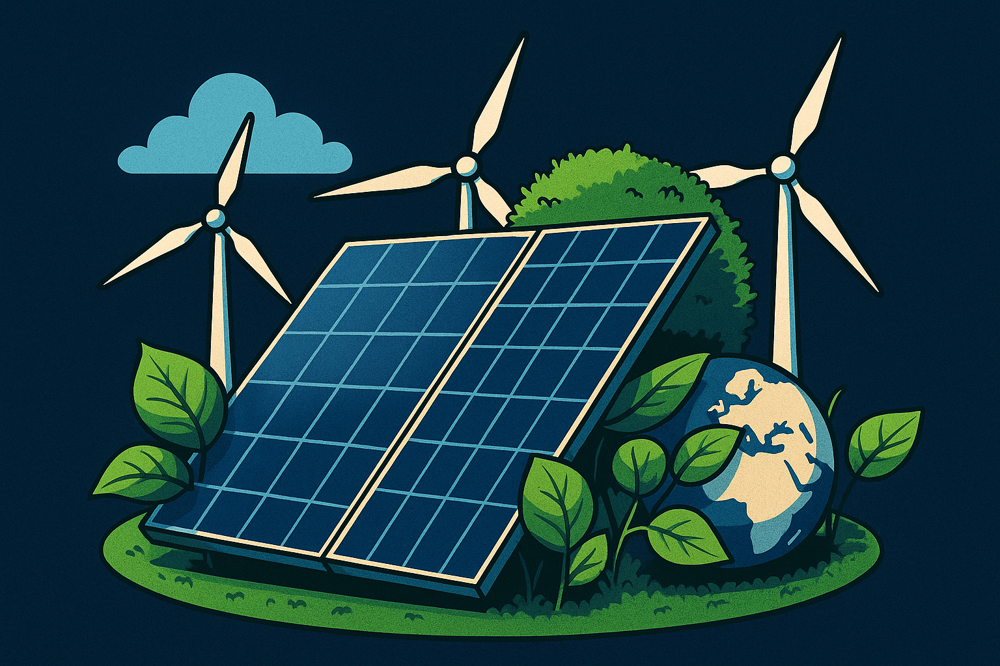

¿Qué son las Energías Renovables?
Las energías renovables son fuentes de energía obtenidas de recursos naturales que se regeneran de manera continua, como la radiación solar, el viento, el agua, el calor del interior de la Tierra y la biomasa. A diferencia de los combustibles fósiles, estas energías son limpias, sostenibles y contribuyen a reducir las emisiones de gases de efecto invernadero, ayudando a mitigar el cambio climático.